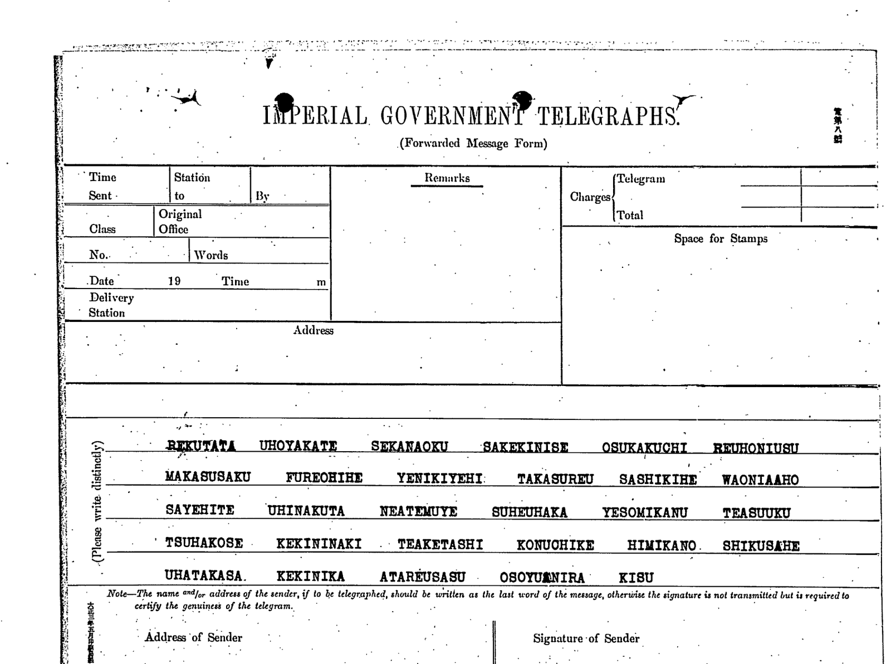
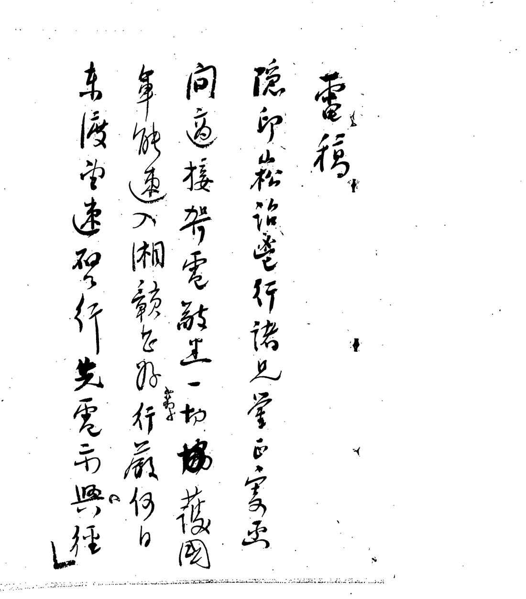
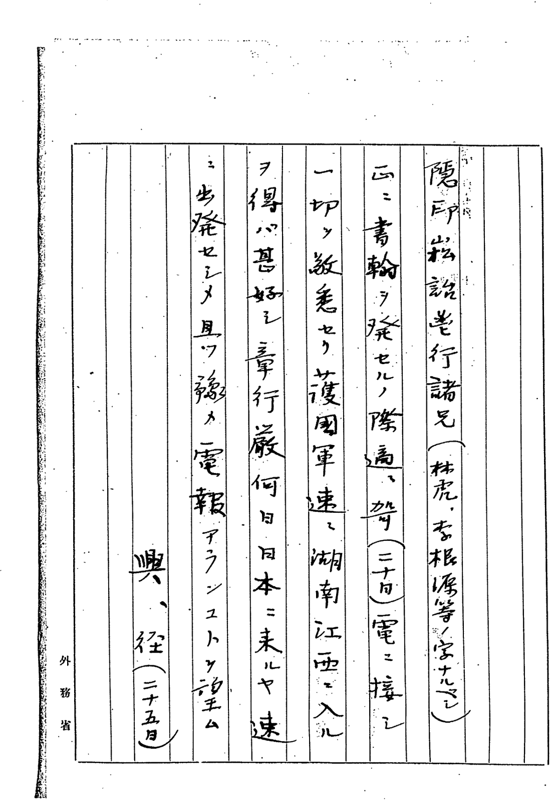

01 The file
JACAR B03050731500 is a Gaimushō volume on the anti-Yuan risings (1.6.1.75-1_015, reel 1-0955, frames 0244–0302). The covering despatch, 電送第一九八〇号, cipher, sent 25 May 1916 at 4.35 p.m. from Foreign Minister Ishii to Consul Ōta at Zhaoqing, says in plain Japanese what the enclosure is:
黄興ヨリ林虎李根源宛電報依頼アリタルニ付同人ニ伝達アリタシ 内容ハ先日来電ノ挨拶ナリ（以下支那側暗号）
“Huang Xing has asked that a telegram be sent to Lin Hu and Li Genyuan; please pass it to them. The content is an acknowledgement of the telegram received the other day. (The Chinese side's cipher follows.)”
Three frames matter: 0246, the telegram on an Imperial Government Telegraphs forwarded-message form; 0247, headed 電稿, the decoded Chinese in cursive; and 0248, a clerk's reading of it rearranged into Japanese word order on Foreign Ministry paper, with his own glosses.

REKUTATA UHOYAKATE SEKANAOKU SAKEKINISE OSUKAKUCHI REUHONIUSU MAKASUSAKU FUREOHIHE YENIKIYEHI TAKASUREU SASHIKIHE WAONIAAHO SAYEHITE UHINAKUTA NEATEMUYE SUHEUHAKA YESOMIKANU TEASUUKU TSUHAKOSE KEKININAKI TEAKETASHI KONUOHIKE HIMIKANO SHIKUSAHE UHATAKASA KEKINIKA ATAREUSASU OSOYUANIRA KISU
Read as kana this is 139 syllables, 36 of them distinct. There are no voiced kana at all — no ga, za, da, ba — which is normal for telegraph traffic, where the voicing marks were simply not transmitted. The syllables are Japanese (SHI, CHI, TSU, and the old YE and WA), not the consonant-vowel letters of the condenser used in the Swatow telegram to Sun Yat-sen six weeks earlier.
02 What the Ministry had already read
Frame 0247 is the decode: a heading 電稿 and four columns of 12, 11, 12 and 11 characters — forty-six characters of message. Frame 0248 is the same text rearranged for a Japanese reader, and it is the more useful of the two, because the clerk added glosses where he was unsure.


隱印崧蕘邕行諸兄鑒：正發書翰之際，適接哿電，敬悉一切。護國軍能速入湘贛甚好。章行嚴何日東渡？速令出發，並望預電。興 徑
“To brothers Yin, Yin, Song, Yao and Yongxing: just as I was sending a letter, your telegram of the twentieth arrived, and I have respectfully noted it all. It would be excellent if the National Protection Army could move quickly into Hunan and Jiangxi. What day does Zhang Xingyan cross to Japan? Have him start at once, and please wire me in advance. — Xing, the twenty-fifth.”
The clerk's glosses carry most of the identifications. Against the string of names at the head he wrote 林虎・李根源等ノ字ナラン, “probably the courtesy names of Lin Hu, Li Genyuan and others” — he was guessing too, and one of them is certainly 蔡鍔's 松坡. He glossed 湘贛 as 湖南江西, Hunan and Jiangxi, and 東渡 as 日本ニ来ル, coming to Japan. 章行嚴 is Zhang Shizhao, Huang Xing's close associate. Two characters are dates in the 韻目代日 rhyme-code that Chinese telegraphy used for the day of the month: 哿 = the 20th and 徑 = the 25th — and 徑, the last character of the signature, matches the dispatch date on the covering despatch exactly. That agreement is the best single check that the decode belongs to this telegram.
Several glyphs in the cursive remain uncertain and are given here on the balance of the two frames. The column lengths are 2 + 12 + 11 + 12 + 11; Tomokiyo's note gives the same figures but sums them as 68, where they add to 48.
03 The scheme
Forty-six characters against 138 usable kana is three kana to the character, with a single kana left spare at the end. That settles the rate. The question is what part of each kana does the work, and the gojūon syllabary answers it by its shape: it is a grid of ten consonant rows by five vowels.
If the consonant row carries a digit and the vowel is free, then a character repeated in the plaintext will repeat as a triple of rows but need not repeat as a triple of kana. That is a testable prediction, and the counts are unambiguous. Across the 46 groups:
| reading | repeats observed | expected by chance | permutation test |
|---|---|---|---|
| consonant row | 7 | 1.03 | p = 0.006 |
| vowel | 8 | 8.28 | p = 0.70 |
| literal kana | 1 | — | — |
The consonant rows repeat seven times where chance predicts one. The vowels repeat eight times where chance predicts eight — they carry nothing whatever. And the surface kana, the thing an interceptor actually sees, repeats once in forty-six. The mechanism is visible in the repeated groups themselves, the same character spelled two different ways:
S K N → SE-KA-NA and SHI-KO-NU
R — H → RE-U-HO and RE-O-HI
T — H → TA-U-HO and TE-U-HI
S K H → SA-KU-FU and SHI-KI-HE
So each kana is one decimal digit written five ways, and each character is three digits. Three digits is the finding that matters for what the cipher actually was: this is not the four-figure standard Chinese telegraph code, and not Yamada Junzaburō's twenty-by-five condenser, which packs two digits into every syllable and which failed against this text when Tomokiyo tried it. A three-digit group addresses at most a thousand entries, so the correspondents were working from a small private codebook of their own.
04 What is still open
Two things, and they are joined at the hip.
- Which digit each of the ten consonant rows stands for. That is a permutation, and the repeat pattern already constrains it, but it cannot be fixed without the codebook or a longer sample.
- The codebook. Forty-six characters of known plaintext sit against forty-six code groups, so forty-six of its entries are directly recoverable — the obstacle is a character-by-character transcription of the cursive on frame 0247 firm enough to trust, and several glyphs there are still uncertain.
A second telegram in the same hand would settle both at once.
05 Sources
- JACAR (Japan Center for Asian Historical Records), Ref. B03050731500, 袁世凱帝制計画一件（極秘）／反袁動乱及各地状況 第十五巻, Diplomatic Archives of the Ministry of Foreign Affairs, 1.6.1.75-1_015, frames 0244–0302.
- S. Tomokiyo, “Chinese Cryptography: 1871–1945” and “Unsolved Historical Ciphers”; and his blog post “Chinese Coded Telegram (1916) from Huang Xing”, which reports the filed decode and the preliminary analysis.
- Reproduce the statistics with
sunyatsen/huang.pyin the repository; the ciphertext is in the script and no data files are needed.